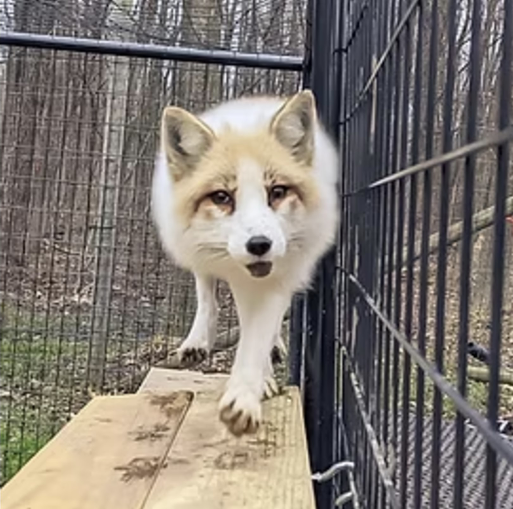

We have several new residents whose bios aren't on our website yet - be sure to check social media for the most up-to-date content!
Toto's Story
Toto - Captive-born Arctic Fox - The Catalyst of Arctic Fox Daily
Rest in Paradise my Toto Bear, 2012-2022

 Toto was the original fox - the "OG" guy - who started this all:
Toto was the original fox - the "OG" guy - who started this all:
In 2012, I purchased Toto - the only fox I've "purchased" - out of a sketchy situation when he was approximately 4 months old.
This is far older than someone would normally purchase a fox for a companion animal, as it is much more difficult to bond with a fox of this age. However, I knew I needed to get him out of the situation he was in.
This marked the beginning of a rewarding journey of learning how to live with and care for this beautiful species. When word started to get around in the wildlife rescue community that I legally owned and cared for a fox, I slowly started to get calls asking to assist with other foxes, which turned into me quickly becoming specialized in the area of foxes, fast forward several years, and voila, Arctic Fox Daily Wildlife Rescue came to be.
Toto was primarily a "hands-off" fox, and doesn't usually prefer physical attention. However, in his older years, he started to not mind the occasional love-scratch here and there. Even so, he and I had an incredible, unspoken bond. He was the catalyst to what we are today. I will miss him dearly and forever be thankful for what he taught me.
Lulu's Story


Lulu - Captive-born Arctic Fox
Lulu came to me when she was only 7 weeks old.
She was purchased by well-meaning people who thought that a fox would be a good fit as a pet for their family, but they learned otherwise. They lived in an apartment in a very populated city, (where it was also very illegal to own a fox without the proper licensing) and they quickly found out that a fox kit is not like a puppy.
Long story short, they discovered that they had made a huge mistake. Knowing that Lulu was bound to eventually be confiscated, and desiring the best for her, they reached out to a canine rescue and asked them to take her. The resuce called me, and the rest is history!
I’ve had a few foxes in my possession with almost identical backgrounds as Lulu’s. Her story is not unique, and an unfortunate reality for many exotic pets. Many exotic species do not make good additions to the average home, require advanced experience, outdoor housing, and need special enrichment. It's important to realize that just because they're cute and seemingly innocent (especially as babies), it doesn't mean they're easy to care for.
Rehoming is more difficult on exotics - especially foxes - than on most domestic animals. Their sense of trust is very fragile, and they bond strongly and quickly to their caretakers when they're young. This is why it's crucial to do extensive research and get hands-on experience with the species before adding any exotic pet to your family.
Thankfully, Lulu was young enough when she arrived here that it wasn't extremely difficult to establish a good relationship with her. She's my girl! And like a lot of us girls, she can be a little moody: Some days, she flops over at my feet - patiently awaiting belly rubs - the second I walk into her enclosure. Other days, I can't get anywhere near her. It's always on her terms.
Tundra and Cleo's Story
Tundra - Captive-born Red Fox
Cleo - Captive-born Arctic Fox
Tundra is a male Red Fox (marble color morph) and Cleo is a female Arctic Fox.
This pair came from a wildlife education organization who operated as a traveling zoo. Unfortunately, like many businesses, the pandemic caused them to have to close their doors, and their animals had to be placed elsewhere. Thankfully, they found their way to us for placement for Tundra and Cleo.
I don’t know the full, original backstory about these guys, but it sounds like both came to this organization as rescue cases to start out - possibly a pet surrender and a fur farm rescue. Is anyone thinking “Wait, an Arctic and a Red species cohabitating together?!”
That’s right - these two have been housed together for several years! I have no intentions of separating the pair. Although not unheard of, it is not as common for the two species to get along in captivity. In the wild, Arctic Foxes and Red Foxes are enemies, as the larger, more powerful, Red species is quickly overlapping the territory of Arctic Foxes. Cleo and Tundra are absolutely considered a bonded pair; during the spring, when wild foxes would be raising young, Tundra caters to Cleo as if she was a Mama fox. He will save his treats and bring them to her, he'll carry toys around in his mouth - whilst making soft, loving whines - treating them like his "babies". Trust me, if you saw the way he treats his lady during that season, you'd wish you had a partner like that, too!
These two have bonded strongly to me, and I have a wonderful relationship with them (although it was rocky in the beginning with Tundra - he gave me the worst bite wound I've ever received from a fox!). These lovebirds have quickly become superstars of Arctic Fox Daily.
Loki's Story
Loki - Captive-born Red Fox
Loki has a sad yet simple story...
He was very well-loved by his previous owners, and he primarily lived in their house. He was used as an exhibition animal for a few years, as his previous family had a small business where they traveled with exotic species that they owned. They had legally owned Loki under a USDA Exhibitor's license, however, when further NYS regulations were released for certain species, from our understanding, they were unable to obtain the new license now required to own a fox in NYS.
They were not alone in this scenario, as I've heard of many others going through this. It's a double-edged sword... it's good that the state is making it harder for most people to own exotics (as so many get rehomed due to the level of care required), however, it's very sad for animals that have an established, loving home.
This was, yet again, another great example of how important it is to know about, adhere to, and stay up to date with your federal, state, and town-level laws.
Siva and Finn's Story
Siva - Captive-born Red Fox
Finn - Captive-born Red Fox
Let’s talk about Finn and Siva’s story, and touch on an overlooked reality of exotic pet ownership:
These two captive-born Red Foxes have been residents here since October 2019. Their human mom legally obtained and owned them, but although she owned them legally on a federal and state level, there were local ordinances put into effect that made it illegal for her to own her foxes, and she was given only a few weeks by the court to get rid of them. She reached out to me, and told me the situation she was in. She needed someone to take in her foxes, but didn’t want to give them up to just anywhere.
We’re incredibly impressed with their mom, because unlike many owners who surrender their pets and don’t keep their word on staying in their life, she is very involved. She helps with chores a couple times per month around here, and always brings treats for not only Finn and Siva, but all the foxes. (She even brings treats for MY human babies occasionally, too!)
This is an easily overlooked truth about “exotic pets”. There are many different levels of laws pertaining to them, and if you fall into a situation like this family did, then you have two main choices: 1) Uproot your life and move, to keep your pets, or 2) Rehome your animal. Option 2 is hard for any animal, and especially exotic pets, because they bond so strongly to one or two people, and lose trust extremely fast. It’s incredibly hard on them.